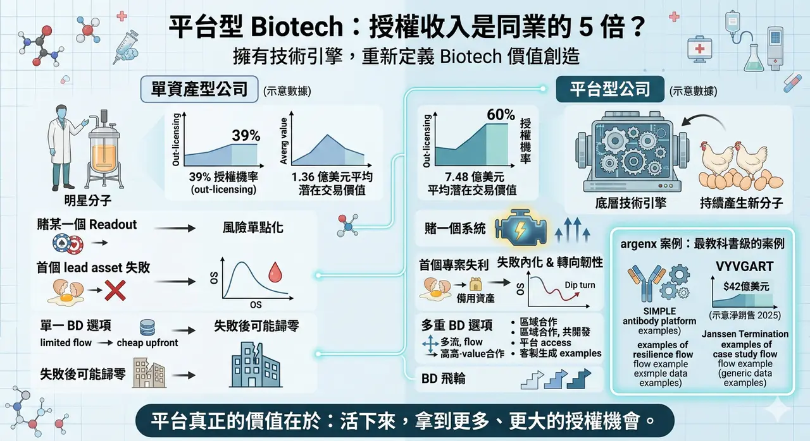
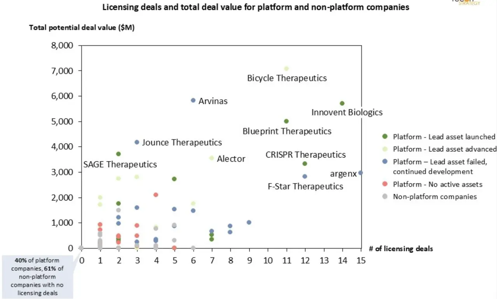
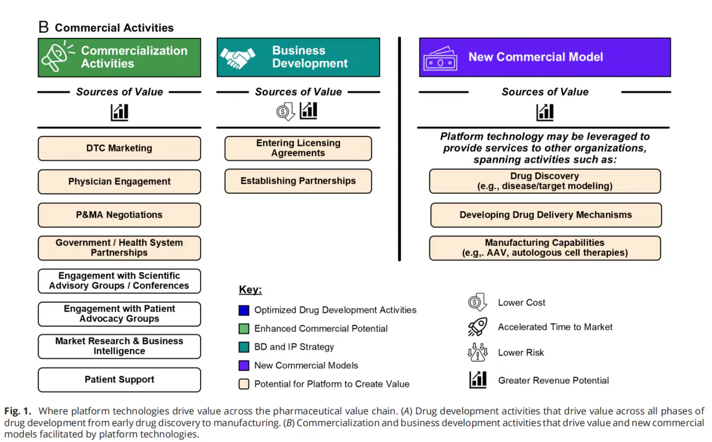
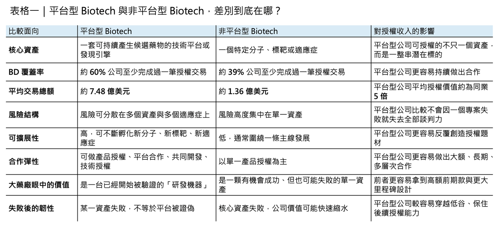
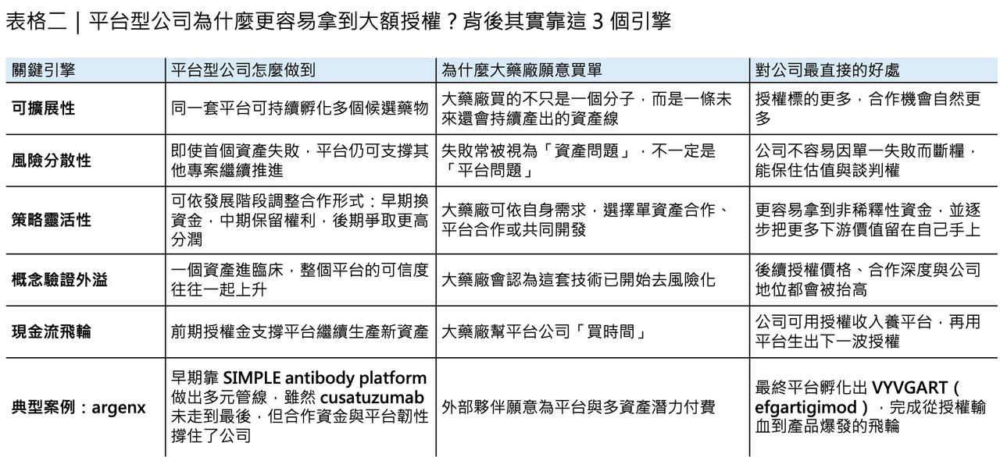

為什麼平台型 Biotech 的授權收入，常常是同業的 5 倍？
如果把 Biotech 的商業模式拆開來看，最容易被低估、但其實最值錢的一種公司，往往不是手上只有一顆明星分子的資產型公司，而是那些擁有底層技術引擎的平台型公司。這不是一句抽象口號，而是已有回顧分析支持的現象：一項針對 220 家公司、追蹤 10 至 15 年發展軌跡的回顧指出，平台型公司不只更常做成 out-licensing，60% 至少完成過一筆授權交易，明顯高於非平台型公司的 39%；更重要的是，它們平均可拿到的總潛在交易價值約 7.48 億美元，而非平台型公司平均只有 1.36 億美元。這不是小幅領先，而是結構性的差距。
🔹不是比較會講故事，而是比較容易讓大藥廠相信：你買到的是一台機器

很多人看到這組數字，第一反應是：平台型公司是不是比較會講故事？
其實剛好相反。平台型公司之所以授權收入明顯更高，核心不在於它們比較會講，而在於它們比較容易讓大藥廠相信：你今天買下的，不只是一顆分子，而是一台可以持續產生分子的機器。
對大型製藥公司來說，單資產型 Biotech 的價值，通常集中在一個特定標靶、一個特定適應症，甚至就是一個特定 readout；但平台型公司賣的，是一套可被複製、可被延伸、可被移植到多個標靶與疾病上的生產能力。只要這個前提成立，平台天然就會創造更多潛在授權標的，也更容易談出高價值合作。Recon Strategy 在同一份分析裡就直接指出，平台公司的授權優勢，正是來自這種可擴展性：它們能透過專有發現引擎或基礎技術，對多個標靶、適應症持續生成資產，因此更容易形成高價值授權與共同研發合作。
🔹平台賣的不是雞蛋，而是會持續下蛋的雞

這裡最關鍵的差別，是單資產公司本質上在賣「雞蛋」，而平台型公司更接近在賣「會持續下蛋的雞」。
如果一家公司的全部價值都押在一個資產上，那麼這顆資產一旦在臨床前或臨床失手，公司估值、現金流與談判地位都可能瞬間崩掉；但平台型公司不同，它們即使第一個資產不成功，失敗也更容易被解讀成資產特異性失敗，而不是平台本身被證偽。這點在前面那份回顧研究裡也看得很清楚：當 lead asset 失敗後，平台型公司仍有更高機率存活並推進後續資產；在那組樣本裡，平台型公司 lead asset 失敗後仍繼續前進的韌性，明顯優於非平台型公司。作者甚至指出，平台公司在首個資產失敗後，常能快速轉向同平台備用資產、改換適應症，甚至整體 pivot 到另一個更有機會的方向。

這也是為什麼，平台型公司的授權價值，常常在逆境裡反而更清楚。
🔹argenx：最教科書級的案例

argenx 幾乎是教科書級案例。它的底層核心是 SIMPLE antibody platform。2018 年，Janssen 與 argenx 就 cusatuzumab 達成全球合作，條件包括 3 億美元 upfront、約 2 億美元股權投資，以及最多 13 億美元的研發、法規與銷售里程碑，外加分級雙位數權利金。後來這條合作在 2021 年被 Janssen 終止，cusatuzumab 並沒有成為改寫公司命運的產品。若這是一家純單資產公司，這種打擊很可能足以致命；但對 argenx 來說，這筆交易早期帶來的資金、外部驗證與戰略緩衝，反而成了平台繼續滾動的關鍵。
真正把 argenx 推上另一個量級的，是後來的 VYVGART（efgartigimod）。
到 2025 年，argenx 公布的全年財報顯示，VYVGART 年淨銷售已達 42 億美元，而前述的 Recon 回顧更直接把它列為平台韌性的代表案例：即使早期 lead asset 與合作案並未如預期收成，平台仍可透過先前授權帶來的 runway 穿越低谷，最終長出更大的產品。這正是平台模式最容易被低估、卻也最值錢的地方：它把「一次失敗可能全盤歸零」的單點風險，變成「這條路不通，還有別條路可以走」的組合風險。
🔹平台真正可怕的，不只是多生幾顆分子，而是 BD 選項更多

再往前看一步，平台型公司真正可怕的，還不只是能多生幾顆分子，而是它們在 BD 上天然擁有更多選項。
單資產公司做授權，常常只有一種邏輯：把這顆藥賣出去，換取 upfront 與里程碑；但平台型公司不同，它既可以做傳統單資產授權，也可以做區域合作、共同開發、平台 access、發現合作，甚至把某個平台模組拆出來，為大藥廠提供半客製化的新分子生成能力。這種策略彈性，決定了平台公司的合作對象更多、合作深度更深、交易結構也更能沿著公司成長節奏逐步升級。
早期可以用合作換非稀釋資金，中期可以保留更多產品權利，後期甚至可以要求 cost share、profit share、共銷售或特定地區商業化權利。平台不是天然就能談到最好條件，但平台確實比單資產公司更有機會把交易做成一套逐步升級的飛輪。這也正是 Steven Holtzman 早年對平台公司策略思考最重要的啟發之一：平台公司如果真有 first-mover 優勢，就應該利用早期合作換時間與彈藥，然後一步步把下游價值拿回來。
🔹平台型公司真正值錢的地方，是重新定義 Biotech 的價值創造方式
也因此，平台型公司之所以能拿到同業數倍的授權收入，根本原因從來不是「平台」這兩個字比較性感，而是它們重新定義了 Biotech 的價值創造方式。
單資產公司，本質上仍是在賭某一個 readout；平台型公司，則是在建造一個能夠持續輸出新 readout 的創新引擎。對創辦人而言，這意味著公司從一開始就不該只想著「我有沒有一顆 best-in-class」，而要思考：我的底層技術是否真的能重複產生新資產、是否能承受首個專案失利、是否值得大藥廠反覆進來合作。
對 BD 團隊而言，平台不是拿來自我標榜的，而是用來設計交易順序的：什麼時候該換 runway，什麼時候該保留權利，什麼時候該讓平台從服務型合作走向產品經濟權，這些都比「我是不是平台公司」更重要。
對投資人也是一樣。
看一家 Biotech，不能只看那顆最亮眼的 lead asset，也不能只看眼前的適應症大小。更重要的問題反而是：如果這顆藥失敗，公司還剩下什麼？如果答案是「還有一個已被部分驗證、可以繼續生成資產的平台」，那麼這家公司真正的下檔風險，通常就比表面上看起來低得多。Recon 那份分析最後其實已經把答案說得很直接：平台型公司最突出的兩個優勢，不是 lead asset 一定比較容易成功，而是更能活下來，也更容易拿到更多、更大的授權機會。
🔹結語
所以，平台型公司授權收入是同業 5 倍，不是偶然，也不是景氣紅利。
那是因為它們賣的從來不只是單一產品，而是一個更接近「可持續產生價值的系統」。
在 Biotech 這個高風險、長週期、現金流永遠緊繃的產業裡，能持續產生新資產、能把失敗內化、能把合作做成飛輪的公司，自然就更容易拿到更大的支票。
這才是平台真正值錢的地方。
參考資料：
[0]:各公司官網＆公開資料
[1]:
Realized value of platform-based biotech: a retrospective analysis of 220 companies - Recon Strategy
We explore four hypothesized value drivers of platform-based companies and evaluate the actual value achieved 10-15 years out from initial capital raise. We found that discovery platforms showed the highest lead asset success rates, significantly more out
reconstrategy.com
"Realized value of platform-based biotech: a retrospective analysis of 220 companies - Recon Strategy"
[2]:
www.us.argenx.com
https://www.us.argenx.com/news/2019/argenx-announces-closing-exclusive-global-collaboration-and-license-agreement-cusatuzumab-argx
www.us.argenx.com
"argenx | argenx announces closing of exclusive global collaboration and license agreement for cusatuzumab (ARGX-110) with Janssen "
[3]:
www.us.argenx.com
https://www.us.argenx.com/news/2026/press-release-3245199
www.us.argenx.com
"argenx | argenx Reports Full Year 2025 Financial Results and Provides Fourth Quarter Business Update"
[4]:
Start your Substack
Thoughts and updates on platform typology and partnering dynamics
centuryofbio.com
"On biotech platform strategy"